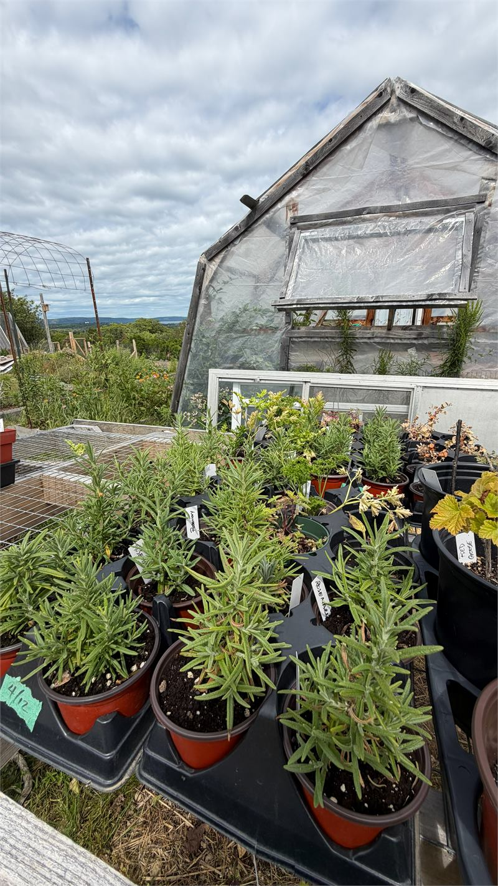
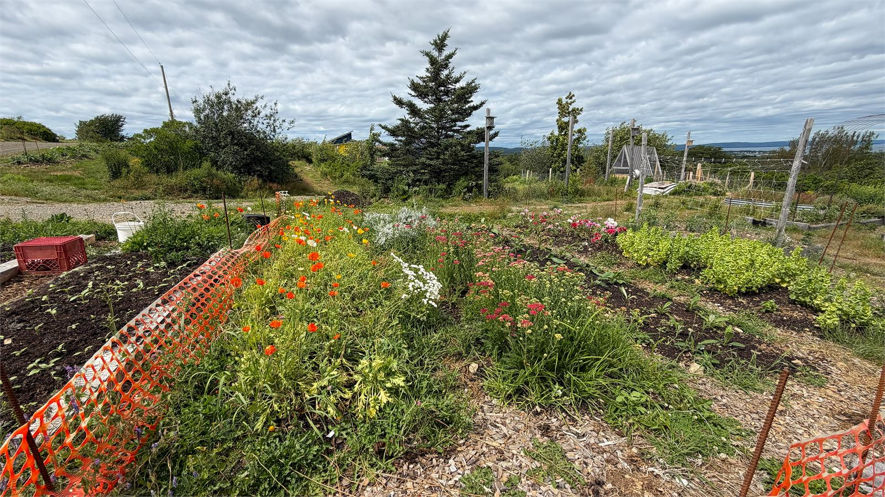
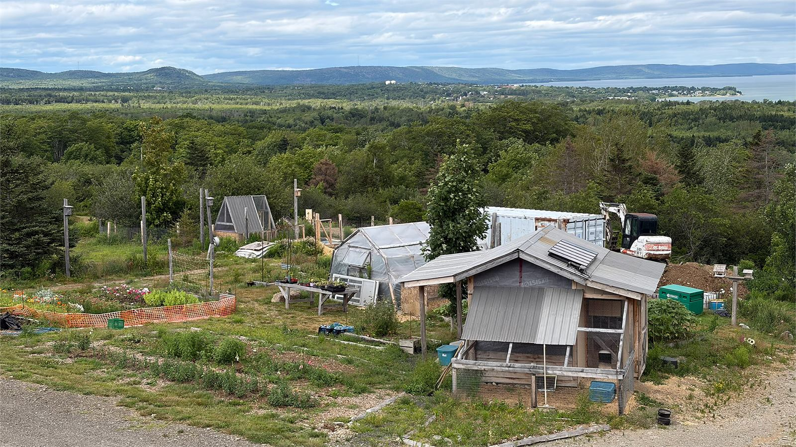
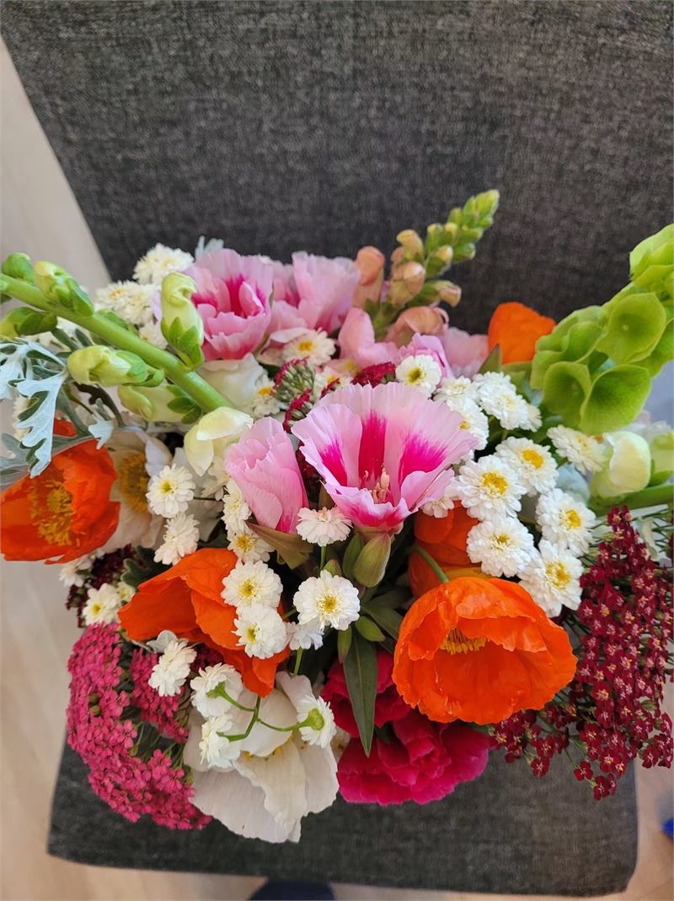
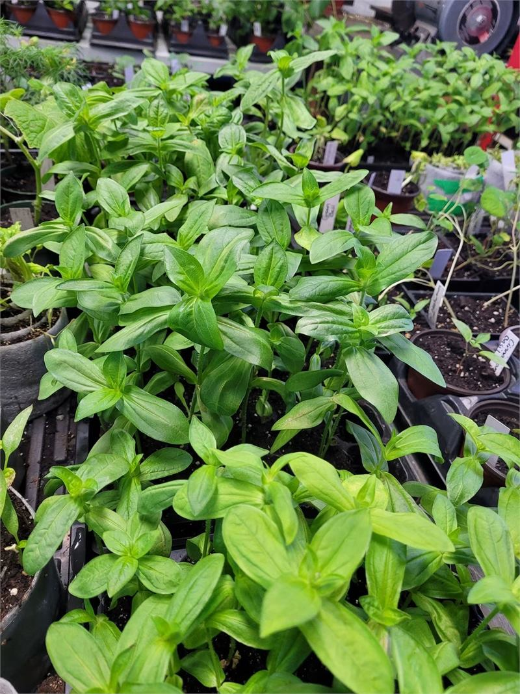
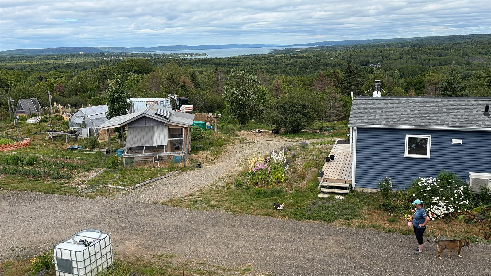
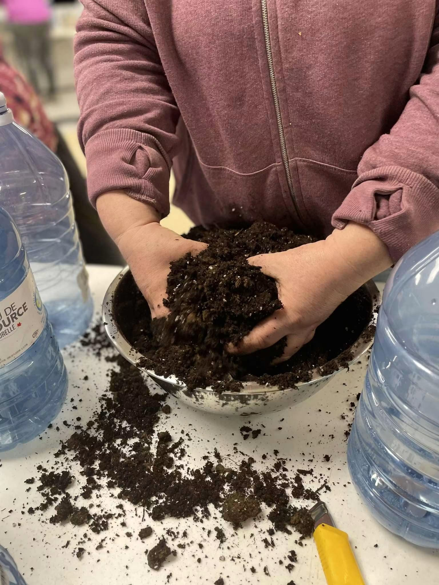
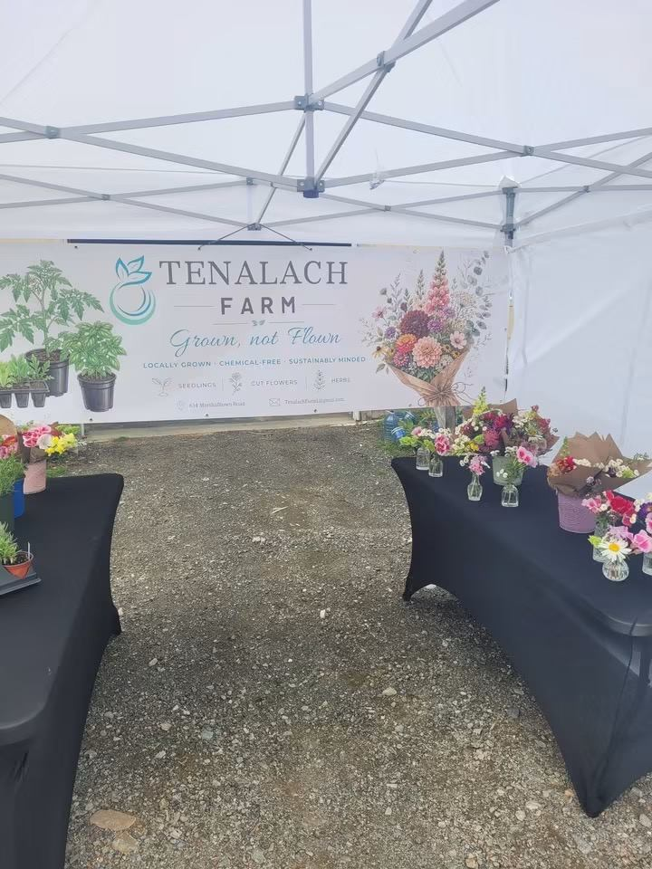

Spring and summer
Seedlings
Vegetable, flower and herb starts, ready to go straight into your garden. The selection is at its widest in spring and early summer.
What we have growing
Grown, not Flown
A small family farm on a breezy hill in Marshalltown, Nova Scotia, growing seedlings, cut flowers and herbs just up the road from Digby.

Tenalach is an Irish word. It means to hear the Earth sing, and it is a fair description of what this place feels like on a good morning.
The farm sits on a breezy hill in Marshalltown, looking out over the trees toward the Annapolis Basin. Cheryl and Bill Antoski run it together, and on most days you will find one of them out in the beds, in the greenhouse, or somewhere in between with a wheelbarrow.
We grow seedlings for people who want to start their own gardens, cut flowers for people who want something lovely on the kitchen table, and herbs for people who want a bit of both. Everything is grown right here, by hand, without chemical sprays.
You are very welcome to come and have a look around. Bring the children, say hello to the ducks, and take your time.
Meet the people behind the farmEvery tray is started and tended here on the farm, so we know exactly how each plant was raised before it reaches you.
No chemical sprays, ever. Better for the soil, better for the bees, and better for whoever ends up eating out of your garden.
Families, first-time gardeners and lifelong growers all get the same warm welcome and the same honest advice.
Our flowers travel a few hundred metres, not a few thousand kilometres. They last longer, and they smell the way flowers should.
What is ready changes through the year, which is half the fun of it. Here is the general shape of a season at Tenalach Farm.

Vegetable, flower and herb starts, ready to go straight into your garden. The selection is at its widest in spring and early summer.
What we have growing
Bouquets and single stems picked from our own beds, usually on the same day they go out. Dahlias, sunflowers, snapdragons and whatever else is at its best.
See the flowers
Culinary herbs sold as sturdy young plants, so you can keep them on the windowsill or plant them out and have them for years.
Herbs we grow
Breezy Hill Bunkie and Copper's Cabin sit on the quiet edge of the property, a short drive from Digby and the ferry. They are holiday rentals rather than farm stays, so your time is entirely your own. Guests are always welcome to wander the trails and see what is growing.
You will find both listed on Airbnb, but booking straight through us costs you less, because there is no platform fee to pay.

Cheryl runs hands-on workshops whenever there is something worth passing along. Winter sowing in milk jugs, starting seeds indoors, putting a bouquet together, and other bits and pieces picked up over a lifetime of growing things.
They are relaxed and practical, and you do not need any experience to join in. Most people arrive knowing nothing at all and leave with something to take home.
The farm does not keep fixed hours. Our days shift with the weather, the season and whatever needs doing, so the most reliable place to check is our Facebook page. That is where we post when the farm is open, when a workshop is coming up, and which markets we will be at.

Through the growing season we load up the van and set up at markets around the area, with seedlings, fresh bouquets and herbs on the table.
Market dates move around from year to year, so we always post where we are going to be on Facebook before we head out. If you are hoping to catch us somewhere in particular, send a message and we will let you know our plans.
Whether you are after a tray of tomato starts, a bouquet for the table, a cabin for the weekend or a spot at the next workshop, the best thing to do is get in touch.